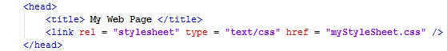

CSS
CSS (Cascading Style Sheets) are an additional part of webpages that accompany the HTML framework. CSS allows you to add more complex formatting to your page than
HTML offers, allowing you to create more visually complex and appealing webpages. CSS works by selecting HTML tags from the page and then applies formatting to everything in the HTML document
which has that tag. Below are sections introducing you to the basics of CSS, note that there is much more to CSS than the basics that are covered here.
Adding CSS
CSS style sheets can be written in the HTML file, however it is much cleaner to store them in their own file. In order to use them, you must link the CSS document to your HTML document, within the
HTML's head tag. This is done using the link tag. Below is a good format to follow when linking an external CSS document to your HTML document.

An Example of Linking a CSS Document to your HTML Page.
Selectors
CSS uses what are known as selectors to state which part of the CSS code is applied to which HTML tags. This is done by selecting the HTML tag(s), hence the name. Additional tags are often
added to the original HTML document to allow CSS formatting more preciscion over which elements of the page it is selecting.
| CSS Selectors |
| Tag | Description |
| HTML Tags | Apply the given CSS formatting to all elements with the given HTML tag. |
| Div | Specific parts of a page can be put inside a div tag to allow CSS more accuracy when selecting which section of the page to format. |
| Class | Different tags can be given a class, allowing CSS to format numerous different tags with the same code, so long as they are specified as being part of this class. |
| id | Applies CSS formatting to elements within the tag with the given id. The id is unique and two tags should not share the same id. |
Selectors are then used in the CSS file followed by the CSS formatting for that selector inbetween two brackets, E.G. Selector { Code Goes Here }. Selectors are identified in CSS slightly differently
depending on their type. Normal HTML tags are identified just as they are. For example, formatting all of the paragraph tags ( < p > ) on a page would be done using: p { CSS code }. Class
selectors are identified with a full stop. For example, to add formatting to a tag with class "myClass" would be done using: .myClass { CSS code }. Adding CSS to a unique id would be done using:
#idName { CSS code }. CSS also allows for more specific selection, such as you can use "p.myClass" to apply CSS to all paragraph tags that have the class "myClass". Meaning that any elements
of this class, that are not a paragraph elements, will not recieve this formatting, allowing for greater control when selecting elements on the page.
Box Model
The box model (illustrated right) is a uniform way of understanding how the formatting of CSS is applied to elements on the page. It builds outwards from the content layer by layer.
The content section represents the original content, whether it be text, an image etc. Padding is a CSS attribute which represents the space between the main content and any applied borders.
Border represents the space taken up by any applied borders to the element. Margin represents the given space between this element and other elements in the page, allowing you to specify
white space between elements.
The box model is a simple way of visualising any formatting that is applied to an element, to help you understand what space is being taken up where.
It is a useful tool when constructing webpages, as it can help with debugging and discovering ways of putting elements together on the page.
Formatting With CSS
The CSS code itself is written by selecting specific parts to format and then writing the formatting required after a colon. The general format is written as "attributeToBeChanged : codeToAlterAttribute."
For example, the attribute height will be would be altered as "height: 10px" (with "px" representing 10 pixels). Note, the CSS attributes are usually altered on seperate lines for style and clarity.
Any attributes that take a measurement (susch as height) can be given: as auto (browser calculates it by default), as a length in pixels (px) centimeters (cm) etc and using a % sign (making the measurement
the given percentage of the available space). Below are some of the main attributes that you can format using CSS. These are just some of the basic, there are many more.
| Formattable CSS Attributes |
| Attribute | Description |
| Margin | Specifiy the amount of white space between this element and others. |
| Border | Allows for numerous types of border formatting, such as: border-width, border-style: and border-color:. |
| Padding | Specify the amount of white space between the element and its border. |
| Width & Height | Allows specification of the width and height of the given element. |
| Background | Can be seet to a default color, using background-color:. Can be set to an image, background-image:, which can be set to repeat, background-repeat: repeat-x
| y | no-repeat. |
CSS also gives you control over the positioning of elements, allowing you to shift elements around the page to make more complex layouts. Below are some of the attributes that can be altered
to change an element's position.
| Positioning Attributes |
| Attribute | Description |
| Float | Takes the element out of the page flow and moves it in the direction specified as far as possible. Can be float left and right. |
| Relative | The element stays in the page flow, but can be displayed in the specified offset position. |
| Absolute | Element removed from page flow and can be positioned in the specified location. |
| Fixed | Element removed from page flow and is positioned in relation to the browser viewport (will stay in that position even when scrolling). |